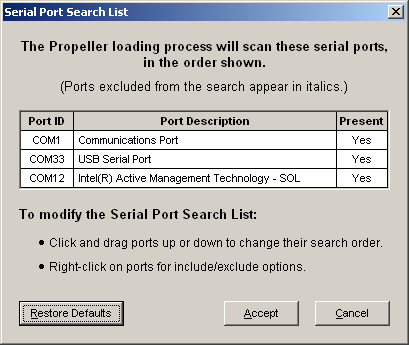

This dialog indicates what serial ports will be scanned, and the order they will be accessed, whenever a Propeller chip identification or download process is started. Use this feature to fine tune the Propeller chip search to include or exclude certain serial ports.

The port list automatically updates whenever ports appear and disappear; such as USB-to-Serial ports. This is an interactive control; use your mouse to view and modify the list as indicated below.
The list of serial ports is shown in the order in which they will be scanned during Propeller chip identification and/or download processes. The ports to be scanned, and the order in which they are scanned, can be set through this interface, described below.
Propeller Help Version 1.2
Copyright © Parallax Inc., dba Parallax Semiconductor
6/17/2011
 Changing the Scan Order
Changing the Scan Order